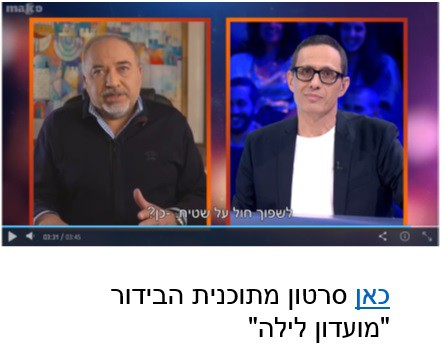

דיפ פייק (Deep Fake)
דיפ פייק (Deep Fake)
דיפ פייק (Deep Fake) הוא שלב נוסף של "חדשות כזב" (Fake News) – טכניקה ליצירת וידאו/אודיו מזויפים באופן ריאליסטי, המשלבת סאונד וויז'ואל שלא שייכים זה לזה באמצעות בינה מלאכותית.
תוכנות המחשב מתאימות בצורה מושלמת הבעות פנים וסאונד כך שהקהל לא יכול לדעת שמדובר בזיוף.

השלכות והשפעות על הדמוקרטיה
• זיופים פוליטיים ובידוריים היו תמיד, אבל דיפ פייק הוא משהו אחר – אדם רגיל לא יכול לדעת שמדובר בזיוף.
• מדובר במצב חדש – אין אמון במראה עיניים. אנחנו יכולים לראות דברים, אבל כבר לא בטוחים שמדובר ב*אמת*.
• יורד האמון הכללי בתקשורת – אזרחים פחות מאמינים במה שהם רואים בתקשורת. זה מוביל לאדישות של האזרחים.
• דמוקרטיה מחייבת אמונה משותפת – אם יורד האמון בתקשורת ובהצגת המציאות – פוחת האמון המשותף על המציאות בתוכה אנחנו חיים.
החשש המרכזי: דיפ פייק מחליש את הדמוקרטיה.
ליברמן מגיע לפגוש את המועדון - mako
מתוך "מועדון לילה". דוגמה להשתלת קול ודימוי של פוליטיקאי לתוך סרטון קיים.

Very realistic Tom Cruise Deepfake | AI Tom Cruise
סרטון המדגים דיפ פייק ריאליסטי במיוחד של טום קרוז, המראה את רמת הדיוק של הטכנולוגיה.

You Won't Believe What Obama Says In This Video! 😉
דוגמה קלאסית לדיפ פייק פוליטי, הממחיש כיצד ניתן לזייף נאומים של דמויות ציבוריות.

שאלות לתרגול
- מהו המושג דיפ פייק? במה הוא שונה מזיופים אחרים?
- מה הסכנות של דיפ פייק על האמון הציבורי והדמוקרטיה?